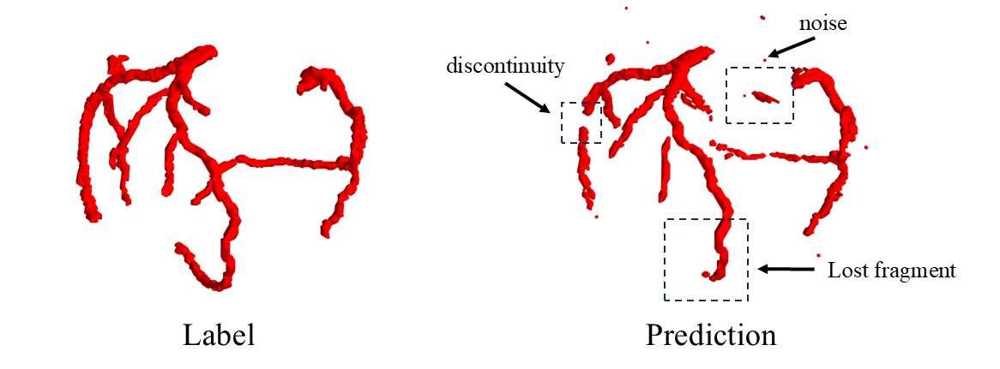

Troubles in Vessel Segmentation
Like most researches in CV field, vessel segmentation faces several problems coming from unexplainability. Today I'd like to present some of them.
What is Vessel Segmentation
The target of vessel segmentation is as its name suggests. We want to extract vessel structure from original CT image.
The characteristic of vessel segmentation is the vessel structure is hard to distinguish from original image. Consequently, there are often problems such as lost fragments, discontinuities, and excessive noise in the prediction results.

Structural information
This phrase seems to be the most popular used in the field of vessel segmentation. To clarify this concept, let's appreciate some references first.
Pan et al. [1] thought 3D Unet ignores global structure information. They proposed the model involves a multi-scale feature interaction between the U-Net and transformer modules, ensuring the model can utilize both local and global structure information.
Wu et al. [2] incorporated self-attention block to U-Net to capture global structure information.
Zhao et al. [3] combined graph attention with U-Net to capture global structure information . Initially they employed U-Net for segmentation, then utilized SLIC to generate super-voxels as graph nodes and calculate edge weights based on their distances.
Dong et al. [4] replaced the conventional skip connection with a novel attention-guided feature fusion module, which attempted to adaptively identify and select the most discriminative semantic and spatial information to segment CA from surrounding veins and noise.
Wu et al. [5] introduced the double attention block to capture long-range features.
Intuitively, structural information or long-range features refer to the relationships between two non-adjacent voxels. However, when using an attention mechanism to compute the association between two adjacent voxels, we are essentially determining this based on their spatial positions. Given that vessels can take on a variety of shapes in space, how can we ensure that our approach generalizes across all cases? I believe that relying solely on attention mechanisms and convolutional networks is insufficient for achieving efficient vessel segmentation, and they do not address the three issues mentioned above.
References
[1] Chengwei Pan, Baolian Qi, Gangming Zhao, Jiaheng Liu, Chaowei Fang, Dingwen Zhang, and Jinpeng Li. Deep 3d vessel segmentation based on cross transformer network. In 2022 IEEE international conference on bioinformatics and biomedicine (BIBM), pages 1115–1120. IEEE, 2022
[2] Yanan Wu, Shouliang Qi, Meihuan Wang, Shuiqing Zhao, Haowen Pang, Jiaxuan Xu, Long Bai, and Hongliang Ren. Transformer-based 3d u-net for pulmonary vessel segmentation and artery-vein separation from ct images. Medical & Biological Engineering & Computing, 61(10):2649–2663, 2023.
[3] Gangming Zhao, Kongming Liang, Chengwei Pan, Fandong Zhang, Xianpeng Wu, Xinyang Hu, and Yizhou Yu. Graph convolution based cross-network multiscale feature fusion for deep vessel segmentation. IEEE Transactions on Medical Imaging, 42(1):183–195, 2022.10
[4] Caixia Dong, Songhua Xu, Duwei Dai, Yizhi Zhang, Chunyan Zhang, and Zongfang Li. A novel multi-attention, multi-scale 3d deep network for coronary artery segmentation. Medical Image Analysis, 85:102745, 2023
[5] Yanan Wu, Shouliang Qi, Meihuan Wang, Shuiqing Zhao, Haowen Pang, Jiaxuan Xu, Long Bai, and Hongliang Ren. Transformer-based 3d u-net for pulmonary vessel segmentation and artery-vein separation from ct images. Medical & Biological Engineering & Computing, 61(10):2649–2663, 2023.